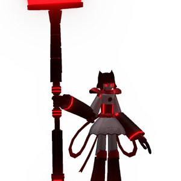

M-41-D
背景

M-41-D 是一具极其巨大的合金体，居住在第 6 层，作为 Hapticor CEO Isyel 所拥有的大宅守卫。
M-41-D 是宅邸中唯一会移动的东西，日夜在走廊中安静巡逻和清扫。试图闯入宅邸的入侵者很可能会遇到她，也很可能会迎来终结。她巨大的机械扫帚因强烈能量而能溶解小物件，并轻易驱散血肉与骨骼；她的体型也让她能轻松压制大多数没有准备的人。
在被激活前，她被保存在第 2 层的一个巨大储存容器中，并在第 2 层一次小规模入侵中被 Hapticor 发现并回收。她似乎原本被设计为对抗 Hapticor 的武器，因为她身上进行过数项改造，包括移除嘴部、将陨落同族被吸收的肝脏置入手臂以获得多种力量与能力，例如对能量的掌控，以及使其技术高度抵抗 OYP 截获。OYP 截获是 Hapticor 常用来劫持第 2 层机械的策略。
被回收后，M-41-D 被 Hapticor 激活，并很快被训练为服从他们，尤其是 Isyel 本人，因为他直接影响了她，并最终在某种程度上成为她的父亲形象。训练完成后，她并没有被送回第 2 层作为武器，而是被派往 Isyel 的旧宅邸居住，负责清洁与保护那里，并得到承诺：Isyel 有一天会回来见她。
然而，那一天从未到来。Isyel 无法看着 M-41-D 而不想起自己失去的女儿。最终，M-41-D 只能独自留下，为一个永远不会回来的人清扫宅邸。
策略
M-41-D 战斗由 2 个子阶段组成：标准阶段和塔阶段。
每场战斗中，当 M-41-D 达到 40% HP 时，她会召唤 2 座 Disruption Tower。每座塔会在治疗 M-41-D 和在玩家靠近时使用大型电击 AoE 之间交替。阶段转换后，M-41-D 也会变得更强，数个招式的半径会增加。
统计
基础 HP：13000
伤害：电击
该 Boss 有两个阶段。
| 属性 | 抗性 |
|---|---|
| 物理 | 中性 (1x) |
| 火焰 | 抗性 (0.75x) |
| 冰霜 | 中性 (1x) |
| 电击 | 弱点 (1.25x) |
| 光耀 | 抗性 (0.5x) |
| 暗影 | 弱点 (1.25x) |
| 毒 | 抗性 (0.25x) |